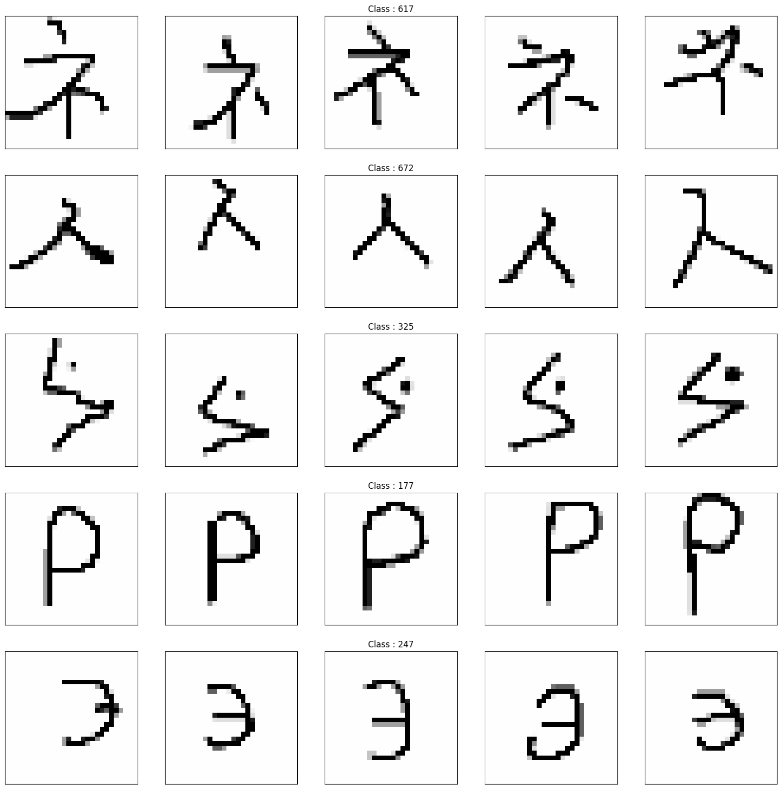
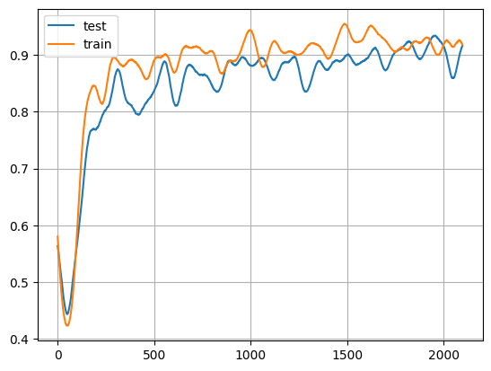
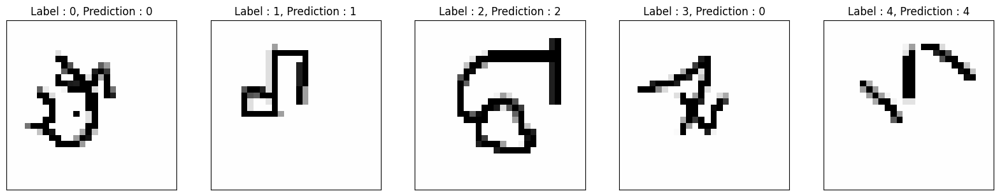

Few-Shot learning with Reptile
Author: ADMoreau
Date created: 2020/05/21
Last modified: 2023/07/20
Description: Few-shot classification on the Omniglot dataset using Reptile.

Introduction
The Reptile algorithm was developed by OpenAI to perform model-agnostic meta-learning. Specifically, this algorithm was designed to quickly learn to perform new tasks with minimal training (few-shot learning). The algorithm works by performing Stochastic Gradient Descent using the difference between weights trained on a mini-batch of never-seen-before data and the model weights prior to training over a fixed number of meta-iterations.
import os
os.environ["KERAS_BACKEND"] = "tensorflow"
import keras
from keras import layers
import matplotlib.pyplot as plt
import numpy as np
import random
import tensorflow as tf
import tensorflow_datasets as tfds
Define the Hyperparameters
learning_rate = 0.003
meta_step_size = 0.25
inner_batch_size = 25
eval_batch_size = 25
meta_iters = 2000
eval_iters = 5
inner_iters = 4
eval_interval = 1
train_shots = 20
shots = 5
classes = 5
Prepare the data
The Omniglot dataset is a dataset of 1,623
characters taken from 50 different alphabets, with 20 examples for each character.
The 20 samples for each character were drawn online via Amazon's Mechanical Turk. For the
few-shot learning task, k samples (or "shots") are drawn randomly from n randomly-chosen
classes. These n numerical values are used to create a new set of temporary labels to use
to test the model's ability to learn a new task given few examples. In other words, if you
are training on 5 classes, your new class labels will be either 0, 1, 2, 3, or 4.
Omniglot is a great dataset for this task since there are many different classes to draw
from, with a reasonable number of samples for each class.
class Dataset:
# This class will facilitate the creation of a few-shot dataset
# from the Omniglot dataset that can be sampled from quickly while also
# allowing to create new labels at the same time.
def __init__(self, training):
# Download the tfrecord files containing the omniglot data and convert to a
# dataset.
split = "train" if training else "test"
ds = tfds.load("omniglot", split=split, as_supervised=True, shuffle_files=False)
# Iterate over the dataset to get each individual image and its class,
# and put that data into a dictionary.
self.data = {}
def extraction(image, label):
# This function will shrink the Omniglot images to the desired size,
# scale pixel values and convert the RGB image to grayscale
image = tf.image.convert_image_dtype(image, tf.float32)
image = tf.image.rgb_to_grayscale(image)
image = tf.image.resize(image, [28, 28])
return image, label
for image, label in ds.map(extraction):
image = image.numpy()
label = str(label.numpy())
if label not in self.data:
self.data[label] = []
self.data[label].append(image)
self.labels = list(self.data.keys())
def get_mini_dataset(
self, batch_size, repetitions, shots, num_classes, split=False
):
temp_labels = np.zeros(shape=(num_classes * shots))
temp_images = np.zeros(shape=(num_classes * shots, 28, 28, 1))
if split:
test_labels = np.zeros(shape=(num_classes))
test_images = np.zeros(shape=(num_classes, 28, 28, 1))
# Get a random subset of labels from the entire label set.
label_subset = random.choices(self.labels, k=num_classes)
for class_idx, class_obj in enumerate(label_subset):
# Use enumerated index value as a temporary label for mini-batch in
# few shot learning.
temp_labels[class_idx * shots : (class_idx + 1) * shots] = class_idx
# If creating a split dataset for testing, select an extra sample from each
# label to create the test dataset.
if split:
test_labels[class_idx] = class_idx
images_to_split = random.choices(
self.data[label_subset[class_idx]], k=shots + 1
)
test_images[class_idx] = images_to_split[-1]
temp_images[
class_idx * shots : (class_idx + 1) * shots
] = images_to_split[:-1]
else:
# For each index in the randomly selected label_subset, sample the
# necessary number of images.
temp_images[
class_idx * shots : (class_idx + 1) * shots
] = random.choices(self.data[label_subset[class_idx]], k=shots)
dataset = tf.data.Dataset.from_tensor_slices(
(temp_images.astype(np.float32), temp_labels.astype(np.int32))
)
dataset = dataset.shuffle(100).batch(batch_size).repeat(repetitions)
if split:
return dataset, test_images, test_labels
return dataset
import urllib3
urllib3.disable_warnings() # Disable SSL warnings that may happen during download.
train_dataset = Dataset(training=True)
test_dataset = Dataset(training=False)
Downloading and preparing dataset 17.95 MiB (download: 17.95 MiB, generated: Unknown size, total: 17.95 MiB) to /home/fchollet/tensorflow_datasets/omniglot/3.0.0...
Dl Completed...: 0 url [00:00, ? url/s]
Dl Size...: 0 MiB [00:00, ? MiB/s]
Extraction completed...: 0 file [00:00, ? file/s]
Generating splits...: 0%| | 0/4 [00:00<?, ? splits/s]
Generating train examples...: 0%| | 0/19280 [00:00<?, ? examples/s]
Shuffling /home/fchollet/tensorflow_datasets/omniglot/3.0.0.incomplete1MPXME/omniglot-train.tfrecord*...: 0%…
Generating test examples...: 0%| | 0/13180 [00:00<?, ? examples/s]
Shuffling /home/fchollet/tensorflow_datasets/omniglot/3.0.0.incomplete1MPXME/omniglot-test.tfrecord*...: 0%|…
Generating small1 examples...: 0%| | 0/2720 [00:00<?, ? examples/s]
Shuffling /home/fchollet/tensorflow_datasets/omniglot/3.0.0.incomplete1MPXME/omniglot-small1.tfrecord*...: 0…
Generating small2 examples...: 0%| | 0/3120 [00:00<?, ? examples/s]
Shuffling /home/fchollet/tensorflow_datasets/omniglot/3.0.0.incomplete1MPXME/omniglot-small2.tfrecord*...: 0…
Dataset omniglot downloaded and prepared to /home/fchollet/tensorflow_datasets/omniglot/3.0.0. Subsequent calls will reuse this data.
Visualize some examples from the dataset
_, axarr = plt.subplots(nrows=5, ncols=5, figsize=(20, 20))
sample_keys = list(train_dataset.data.keys())
for a in range(5):
for b in range(5):
temp_image = train_dataset.data[sample_keys[a]][b]
temp_image = np.stack((temp_image[:, :, 0],) * 3, axis=2)
temp_image *= 255
temp_image = np.clip(temp_image, 0, 255).astype("uint8")
if b == 2:
axarr[a, b].set_title("Class : " + sample_keys[a])
axarr[a, b].imshow(temp_image, cmap="gray")
axarr[a, b].xaxis.set_visible(False)
axarr[a, b].yaxis.set_visible(False)
plt.show()

Build the model
def conv_bn(x):
x = layers.Conv2D(filters=64, kernel_size=3, strides=2, padding="same")(x)
x = layers.BatchNormalization()(x)
return layers.ReLU()(x)
inputs = layers.Input(shape=(28, 28, 1))
x = conv_bn(inputs)
x = conv_bn(x)
x = conv_bn(x)
x = conv_bn(x)
x = layers.Flatten()(x)
outputs = layers.Dense(classes, activation="softmax")(x)
model = keras.Model(inputs=inputs, outputs=outputs)
model.compile()
optimizer = keras.optimizers.SGD(learning_rate=learning_rate)
Train the model
training = []
testing = []
for meta_iter in range(meta_iters):
frac_done = meta_iter / meta_iters
cur_meta_step_size = (1 - frac_done) * meta_step_size
# Temporarily save the weights from the model.
old_vars = model.get_weights()
# Get a sample from the full dataset.
mini_dataset = train_dataset.get_mini_dataset(
inner_batch_size, inner_iters, train_shots, classes
)
for images, labels in mini_dataset:
with tf.GradientTape() as tape:
preds = model(images)
loss = keras.losses.sparse_categorical_crossentropy(labels, preds)
grads = tape.gradient(loss, model.trainable_weights)
optimizer.apply_gradients(zip(grads, model.trainable_weights))
new_vars = model.get_weights()
# Perform SGD for the meta step.
for var in range(len(new_vars)):
new_vars[var] = old_vars[var] + (
(new_vars[var] - old_vars[var]) * cur_meta_step_size
)
# After the meta-learning step, reload the newly-trained weights into the model.
model.set_weights(new_vars)
# Evaluation loop
if meta_iter % eval_interval == 0:
accuracies = []
for dataset in (train_dataset, test_dataset):
# Sample a mini dataset from the full dataset.
train_set, test_images, test_labels = dataset.get_mini_dataset(
eval_batch_size, eval_iters, shots, classes, split=True
)
old_vars = model.get_weights()
# Train on the samples and get the resulting accuracies.
for images, labels in train_set:
with tf.GradientTape() as tape:
preds = model(images)
loss = keras.losses.sparse_categorical_crossentropy(labels, preds)
grads = tape.gradient(loss, model.trainable_weights)
optimizer.apply_gradients(zip(grads, model.trainable_weights))
test_preds = model.predict(test_images)
test_preds = tf.argmax(test_preds).numpy()
num_correct = (test_preds == test_labels).sum()
# Reset the weights after getting the evaluation accuracies.
model.set_weights(old_vars)
accuracies.append(num_correct / classes)
training.append(accuracies[0])
testing.append(accuracies[1])
if meta_iter % 100 == 0:
print(
"batch %d: train=%f test=%f" % (meta_iter, accuracies[0], accuracies[1])
)
batch 0: train=0.600000 test=0.200000
batch 100: train=0.800000 test=0.200000
batch 200: train=1.000000 test=1.000000
batch 300: train=1.000000 test=0.800000
batch 400: train=1.000000 test=0.600000
batch 500: train=1.000000 test=1.000000
batch 600: train=1.000000 test=0.600000
batch 700: train=1.000000 test=1.000000
batch 800: train=1.000000 test=0.800000
batch 900: train=0.800000 test=0.600000
batch 1000: train=1.000000 test=0.600000
batch 1100: train=1.000000 test=1.000000
batch 1200: train=1.000000 test=1.000000
batch 1300: train=0.600000 test=1.000000
batch 1400: train=1.000000 test=0.600000
batch 1500: train=1.000000 test=1.000000
batch 1600: train=0.800000 test=1.000000
batch 1700: train=0.800000 test=1.000000
batch 1800: train=0.800000 test=1.000000
batch 1900: train=1.000000 test=1.000000
Visualize Results
# First, some preprocessing to smooth the training and testing arrays for display.
window_length = 100
train_s = np.r_[
training[window_length - 1 : 0 : -1],
training,
training[-1:-window_length:-1],
]
test_s = np.r_[
testing[window_length - 1 : 0 : -1], testing, testing[-1:-window_length:-1]
]
w = np.hamming(window_length)
train_y = np.convolve(w / w.sum(), train_s, mode="valid")
test_y = np.convolve(w / w.sum(), test_s, mode="valid")
# Display the training accuracies.
x = np.arange(0, len(test_y), 1)
plt.plot(x, test_y, x, train_y)
plt.legend(["test", "train"])
plt.grid()
train_set, test_images, test_labels = dataset.get_mini_dataset(
eval_batch_size, eval_iters, shots, classes, split=True
)
for images, labels in train_set:
with tf.GradientTape() as tape:
preds = model(images)
loss = keras.losses.sparse_categorical_crossentropy(labels, preds)
grads = tape.gradient(loss, model.trainable_weights)
optimizer.apply_gradients(zip(grads, model.trainable_weights))
test_preds = model.predict(test_images)
test_preds = tf.argmax(test_preds).numpy()
_, axarr = plt.subplots(nrows=1, ncols=5, figsize=(20, 20))
sample_keys = list(train_dataset.data.keys())
for i, ax in zip(range(5), axarr):
temp_image = np.stack((test_images[i, :, :, 0],) * 3, axis=2)
temp_image *= 255
temp_image = np.clip(temp_image, 0, 255).astype("uint8")
ax.set_title(
"Label : {}, Prediction : {}".format(int(test_labels[i]), test_preds[i])
)
ax.imshow(temp_image, cmap="gray")
ax.xaxis.set_visible(False)
ax.yaxis.set_visible(False)
plt.show()

